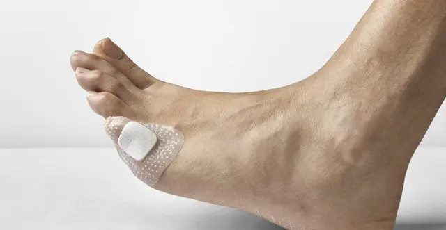

¿Cuándo Necesitas Curaciones Especializadas en el Pie?
Las lesiones en pies y tobillos pueden empeorar rápido si no se tratan con la técnica adecuada, porque el riesgo no está solo en lo que se ve sino en lo que pasa debajo: bacterias, tejido sin vida, presión en cada paso y, en algunos casos, mala circulación o poca sensibilidad, todo lo cual frena la cicatrización y aumenta la posibilidad de infección.
En Podóloga Aurora, en Pachuca, Hidalgo, diseñamos cada curación para acompañar a la herida en sus etapas naturales de recuperación, manteniendo un ambiente equilibrado, ni reseco ni demasiado húmedo, bajando la carga de bacterias y protegiendo la zona para que cierre de forma segura.
Importante: si la herida se pone roja, caliente, duele cada día más, huele mal, supura o cambia de color, no la trates por tu cuenta y pide una valoración y curación el mismo día, porque actuar a tiempo evita complicaciones mayores.

Lesiones y Heridas que Atendemos con Curación Avanzada
Atendemos distintos tipos de heridas en los pies y ajustamos el tratamiento a su origen y a cómo va evolucionando:
- Heridas por roce o calzado: lesiones por fricción, zonas “peladas” y abrasiones que se reabren al caminar
- Ampollas y flictenas: manejo seguro para evitar infección y favorecer cierre sin traumatizar la piel
- Heridas post uña encarnada: curación y control de inflamación en el borde ungueal, con protección local
- Fisuras profundas: grietas en talón o planta que sangran, arden o se infectan con facilidad
- Úlceras superficiales: lesiones que no cierran bien por presión o por mala calidad de piel
- Heridas de alto riesgo: pacientes con diabetes, mala circulación o pérdida de sensibilidad (requieren control más estricto)
¿Qué Incluye una Curación Especializada en Podóloga Aurora?
Una curación va mucho más allá del vendaje, por eso seguimos un protocolo clínico completo según la etapa en que esté la herida:
- Evaluación de la lesión: tamaño, profundidad, bordes, exudado, signos de infección y zonas de presión
- Limpieza clínica: irrigación y asepsia para disminuir carga bacteriana sin dañar tejido sano
- Manejo de tejido comprometido: retiro de material no viable si se requiere (según criterio clínico y seguridad)
- Selección de apósito avanzado: apósitos que favorecen cicatrización húmeda, protección y control del exudado
- Protección y descarga: recomendaciones para evitar fricción y presión que “rompen” la curación al caminar
- Plan de seguimiento: controles y frecuencia de curación según evolución real de la herida
Señales de Alarma: Agenda Curación Urgente
Si notas cualquiera de estas señales, te recomendamos buscar atención de inmediato:
- Enrojecimiento que se expande alrededor de la herida
- Calor local, aumento de dolor o inflamación progresiva
- Secreción amarilla/verdosa, mal olor o sangrado repetitivo
- Herida que no mejora en 48 a 72 horas con cuidados básicos
- Cambio de color oscuro, piel muy pálida o aspecto “morado” en dedos
- Fiebre o malestar general asociado a una lesión en el pie
Cuidados en Casa para Acelerar la Cicatrización
Entre una curación y la siguiente, seguir estas recomendaciones ayuda a que te recuperes mejor:
- Mantener la curación limpia y seca por fuera (sin mojar el apósito)
- No aplicar remedios caseros, alcohol, yodo excesivo o cremas irritantes sin indicación
- Evitar caminar largas distancias si la lesión está en zona de apoyo
- Usar calzado amplio, sin costuras internas agresivas y con calcetín limpio
- No arrancar costras ni “pelar” la piel: eso retrasa el cierre y aumenta el riesgo de infección
- Asistir a los controles programados: la herida cambia y el apósito también debe cambiar
Seguimiento recomendado: algunas heridas sanan rápido y otras necesitan varias curaciones, y la frecuencia se decide según la cantidad de exudado, la zona y los factores de riesgo que haya, como diabetes, mala circulación o poca sensibilidad, así que ajustamos el plan a cómo avanzas de verdad, sin un número fijo de citas.